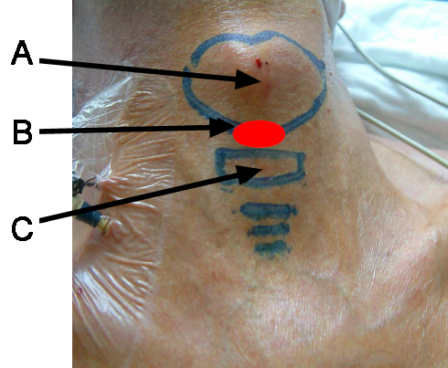

Cricothyroïdotomie
AdulteSpécialité : orl /
Points importants
- La cricothyroïdotomie ne doit être réalisée que lorsque intubation et oxygénation sont impossibles en utilisant les techniques alternatives habituelles
- Les dispositifs de cricothyroïdotomie faisant appel à la technique de Seldinger sont les plus efficaces et les moins dangereux
Indications
- C’est une technique de sauvetage qui ne doit être utilisée qu’en dernier recours
- La cricothyroïdotomie peut être réalisée en milieu intra hospitalier comme en milieu préhospitalier
- L’indication de cette technique réside dans la situation où l’intubation ainsi que la ventilation sont impossibles et que survient une désaturation menaçante
Contre-indications
- Il n’y a pas de contre-indications à proprement parler mais l’existence d’un goitre, d’une déformation de la région cervicale et /ou d’une obésité morbide peuvent rendre la technique très difficile
Présentation du matériel
-
Il existe plusieurs kits de cricothyroïdotomie comprenant tous le matériel nécessaire à cet abord trachéal de sauvetage :
- une aiguille de diamètre assez important
- une seringue
- un guide métallique
- un dilatateur
- la canule de cricothyrodotomie
- Certaines canules de cricothyroïdotomie sont équipées de ballonnets qui assurent, une fois la canule en place, une parfaite étanchéité et l’absence de fuites lors de la ventilation mécanique
- L’utilisation de kits de cricothyroïdotomie ne faisant pas appel à la technique de Seldinger n’est pas recommandée
Description de la technique
fichier_133 fichier_133 - - - Cricothyroïdotomie
Préparation du patient
- Si le patient est conscient, il faut réaliser une anesthésie locale de la région crico-thyroïdienne
- Le patient est en décubitus dorsal et il faut repérer les cartilages cricoïde et thyroïde ainsi que la membrane crico-thyroïdienne
 fichier_661 Photo Repères membrane intercricothyroïdienne
Technique
- Pour la réalisation d’une cricothyroïdotomie selon la technique de Seldinger, le premier temps consiste à repérer la membrane cricothyroidienne qui est ponctionnée avec une aiguille sur la quelle est montée une seringue maintenue en aspiration
- Une fois la lumière trachéale cathétérisée, il faut insérer à travers l’aiguille un guide métallique
- Un dilatateur sur lequel est positionnée la canule est alors glissé le long du guide métallique
- La peau est incisée au bistouri avec une incision radiaire autour du point de ponction
- Le dilatateur et la canule sont alors insérés dans la trachée jusqu’à la garde
- Le guide et le dilatateur sont alors retirés et la canule peut être fixée
Pièges éventuels
- Une des principales limites de la technique est qu’elle nécessite une formation initiale
- La courbe d’apprentissage de la cricothyroidotomie sur cadavre ou sur mannequin atteint un plateau après 5 à 10 manipulations
- Très peu de médecins anesthésistes, réanimateurs ou urgentistes ont une formation pratique avec cette technique
Complications
- Les principales complications rencontrées sont le fait de l’utilisation d’une technique trop peu souvent maîtrisée dans un contexte stressant de grande urgence
- Fausses routes
- Perforation œsophagienne
- Lésions des cordes vocales
- Hémorragies importantes en cas de ponctions de structures vasculaires peuvent entraîner un échec dramatique de cette tentative ultime de contrôle des voies aériennes
Surveillance
- Monitoring du patient : scope, oxymétrie de pouls, PA non invasive, capnométrie
Bibliographie
- Schaumann N, Lorenz V, Schellongowski P, et al. Evaluation of Seldinger technique emergency cricothyroidotomy versus standard surgical cricothyroidotomy in 200 cadavers. Anesthesiology 2005;102(1):7-11.
- Jacobson LE, Gomez GA, Sobieray RJ, Rodman GH, Solotkin KC, Misinski ME. Surgical cricothyroidotomy in trauma patients: analysis of its use by paramedics in the field. J Trauma 1996;41(1):15-20.
- Leibovici D, Fredman B, Gofrit ON, Shemer J, Blumenfeld A, Shapira SC. Prehospital cricothyroidotomy by physicians. Am J Emerg Med 1997;15(1):91-3.
- Battefort F, Bounes V, Pulcini M, Houze-Cerfon CH, Ducasse JL. [Prehospital cricothyrotomy: a case report]. Ann Fr Anesth Reanim 2007;26(2):171-3.
Auteur(s) : Xavier COMBES